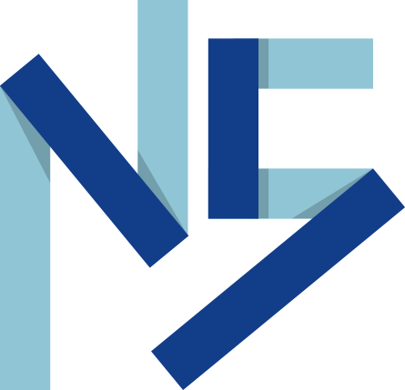

NIKOLA SPACI
Bienvenue sur mon Eportfolio je suis un étudiant de deuxième années informatique

Qui suis je ?
Actuellement étudiant en deuxième année de DUT Informatique à l'IUT paris Descartes, je cherche un stage à partir du 9 avril 2018 pour une d'une durée de 10 semaines minimum. Ayant réalisé un grand nombre de projets scolaire et personnels dans divers domaines de l'informatique je maîtrise de nombreux outils et langages informatiques. Afin de rester compétitif et développer ma culture personnelle je suis en veille constante sur les nouvelles technologies (frameworks, sécurité informatique...).